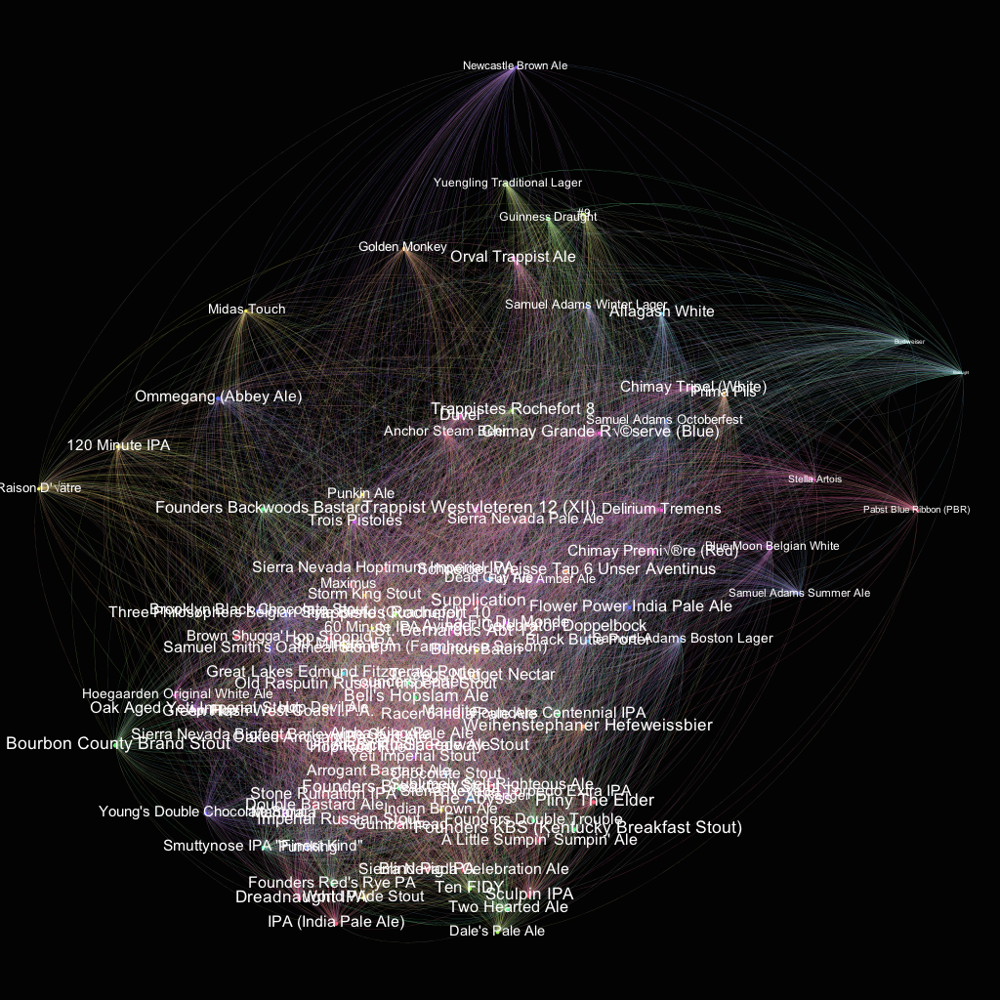

A Beer Recommender
By Karen Xiao, Kevin Wu, and Sandesh Kataria
Carpe Beerem is a beer recommendation tool for beer enthusiasts and people looking to discover new beers.
About
In our project, we aim to create a recommendation system for beers based on item-item collaborative filtering, similar to the method used on Yelp review data in Problem Set 4.
In addition to generating recommendations for users based on his/her stated preferences for beer, we also explored a number of ways to visualize the data we scraped from beeradvocate.com
Data Collection
Data collection and cleaning was a substantial component of this project. Because there is currently no BeerAdvocate API, and because the html used to write the website was, at times, archaic, it took a substantial investment of time and energy to scrape data on beers, beer ratings, and other relevant information.
Again, since there was no API, regular html scraping was used to collect the information from beer profiles such as this one. The urls for beers were scraped by first scraping the different style categories for beers, than scraping the url links to each individual beer underneath each category.
Then, the fact that there was no single web page where all the ratings for a particular beer could be found meant traversing through all of the separate pages (i.e. http://beeradvocate.com/beer/profile/132/354/?show_ratings=Y&count=50) in order to collect all the data.
The Recommender
The recommender is made using a K-Nearest Neighbors Collaborative Filtering method. Collaborative filtering methods make use of past information on users' behaviors, activities or preferences to predict what users will like based on their similarity to other users. Because our data contains a large amount of data on users (specifically what ratings users gave to various types of beer), we thought this was a good approach for building our recommendation system.
For the K-Nearest Neighbors approach, we implemented and compared two different similarity measures: Pearson Co-efficient and Cosine Similarity. These similarity values gave us the similarity between two beers based on how similarly users rated the beers. For each of the methods, we also subtracted out the user's average rating to account for biases in the way users rate beers.
We analyzed our results
Network Analysis

In Part III of our analysis, our group uses networks to visualize the relationships between beers, using user review data on various pairs of beers to define the edge weights between nodes.
One of the ways we decided to weight edges was through a pearson similarity coefficient, which would require us to know the average rating a user gives beers in this particular dataset.
The motivation behind using a pearson similarity coefficient to weight the edges was that this would provide a way to visualize the correlation between all beers at once, in a statistically sound way.
This visualization, done using the pearson similarity coefficient network, we color nodes by location of origin, and observe a fair amount of clustering along that axis. One simple explanation for this is that beers from the same city or region are often from the same brewery, and people are more likely to enjoy a beer if they have had a different beer by the same brand. Budweiser and Bud Light are an example of this. Beer style still seems to be a major factor though - notice the collection of PA and IPAs at the bottom of the graph.
**One added feature of this network visualization is that node label sizes are proportionate to average user rating, and by looking at this graph you can notice some of the winners/losers.
{kind=link}
Regression Analysis
In addition to recommending beers and visualizing networks of beers, we used the data we scraped to gain a better understanding of the user ratings on Beer Advocate. Each user has to rate the beer's look, smell, feel, and taste which is averaged to calculate an overall user rating. We created scatterplot matrix and did a linear regression to figure out which one of those attributes is the best predictor of the overall user rating.
Data
Our data was scraped from beeradvocate.com. Download the data:- small_data.csv (46 MB)
- large_data.csv (86 MB)
{kind=link}